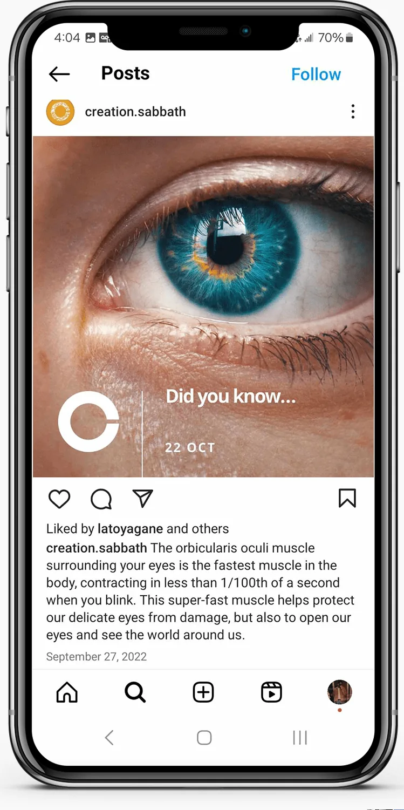
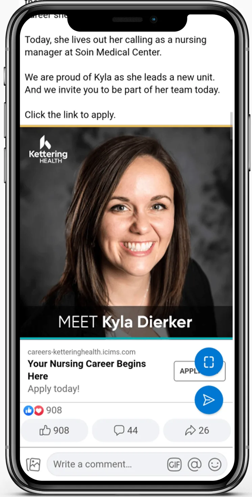

Science communication
Written for a small organization whose goal was to communicate science-based information to a general audience.



Work
“To me, all advertising that is truly great reeks of honest humanity. Whether a result of wit, intelligence, insight or artfulness, great advertising invariably transmits itself to the receiver on a fragile human frequency.”
—Ed McCabe, co-founder, Scali, McCabe, Sloves
Science communication
Written for a small organization whose goal was to communicate science-based information to a general audience.

Kettering Health
For Kettering Health, one of the largest medical systems in Ohio.



Adairsville SDA
A small ministry in California.


Let's work together
I'm open to copywriting, content and digital marketing roles and projects.